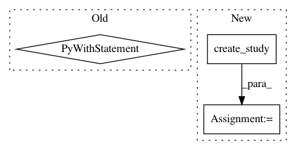

d1eb8732e44fac136862125dc7811f153f720b29,tests/samplers_tests/tpe_tests/test_sampler.py,,test_sample_relative_handle_unsuccessful_states,#Any#,339
Before Change
with warnings.catch_warnings():
warnings.simplefilter("ignore", optuna.exceptions.ExperimentalWarning)
sampler = TPESampler(n_startup_trials=5, seed=0, multivariate=True)
with patch.object(study._storage, "get_all_trials", return_value=past_trials):
all_success_suggestion = sampler.sample_relative(study, trial, {"param-a": dist})
// Test unsuccessful trials are handled differently.
state_fn = build_state_fn(state)
past_trials = [frozen_trial_factory(i, dist=dist, state_fn=state_fn) for i in range(1, 100)]
trial = frozen_trial_factory(100)
with warnings.catch_warnings():
After Change
all_success_suggestion = sampler.sample_relative(study, trial, {"param-a": dist})
// Test unsuccessful trials are handled differently.
study = optuna.create_study()
state_fn = build_state_fn(state)
for i in range(1, 100):
trial = frozen_trial_factory(i, dist=dist, state_fn=state_fn)
study._storage.create_new_trial(study._study_id, template_trial=trial)
In pattern: SUPERPATTERN
Frequency: 3
Non-data size: 3
Instances
Project Name: pfnet/optuna
Commit Name: d1eb8732e44fac136862125dc7811f153f720b29
Time: 2020-10-17
Author: hiroyuki.vincent.yamazaki@gmail.com
File Name: tests/samplers_tests/tpe_tests/test_sampler.py
Class Name:
Method Name: test_sample_relative_handle_unsuccessful_states
Project Name: pfnet/optuna
Commit Name: d1eb8732e44fac136862125dc7811f153f720b29
Time: 2020-10-17
Author: hiroyuki.vincent.yamazaki@gmail.com
File Name: tests/samplers_tests/tpe_tests/test_sampler.py
Class Name:
Method Name: test_sample_independent_handle_unsuccessful_states
Project Name: pfnet/optuna
Commit Name: c5def17727d6153606741ffaf4461c767ea478bc
Time: 2020-07-06
Author: phjgt308@gmail.com
File Name: tests/visualization_tests/test_edf.py
Class Name:
Method Name: test_plot_optimization_history